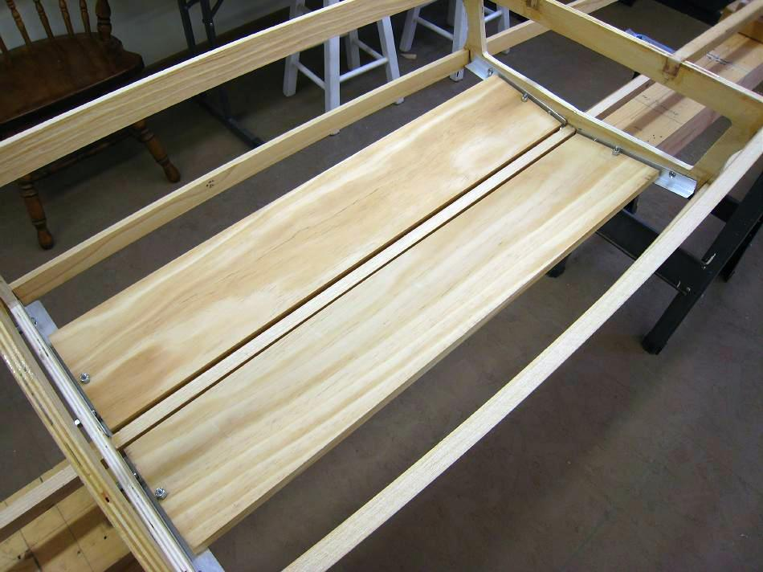

| Floor ( 1 of 11) | Menu Last Page Next Page |
|

The removable Sea Bee floor is constructed of 2ea. - 30" X 6" X 1/2" pine sections. The floor is attached to 3/4" x 1/16" aluminum angle which in turn is bolted to the plywood cross sections. The next several pages describe in detail this floor construction method. Additional removable wood floor instructions are available in the "Folding Kayak Builders Manual" . Use the {Back} key to return. The floor described there is similar to the one above, but is constructed using cedar slats instead of solid sections. Other methods include glueing the floor directly the cross sections, or lash and glue. Neither will be described in this manual.
|
|